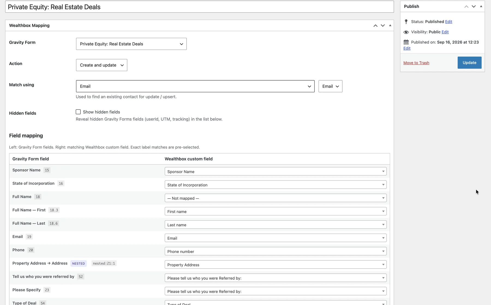

Temas à medida e construtores
Um tema à medida quando o design o pede, ou um site limpo em Elementor, Divi, Bricks, WPBakery ou Oxygen quando a equipa quer editar as páginas visualmente.
Faço criação de sites WordPress à medida há mais de 8 anos, a partir do Porto. Construo temas e plugins personalizados, trabalho com Elementor, Divi, Bricks, WPBakery e Oxygen, crio lojas WooCommerce e faço a manutenção de sites WordPress para empresas em Portugal e no estrangeiro.

Quatro tipos de trabalho em WordPress fazem a maior parte dos meus projetos.
Um tema à medida quando o design o pede, ou um site limpo em Elementor, Divi, Bricks, WPBakery ou Oxygen quando a equipa quer editar as páginas visualmente.
Quando nenhum plugin faz o que o negócio precisa, escrevo um. Criei um plugin que envia os formulários do Gravity Forms para dois CRMs, Advyzon e Wealthbox, depois de nenhuma integração existente o conseguir.
Páginas lentas, conflitos entre plugins, layouts partidos depois de uma atualização, um site feito por outra pessoa que ninguém consegue manter. Encontro a causa e corrijo-a.
Atualizações, cópias de segurança, verificações de segurança e pequenas alterações, para que o site se mantenha seguro e atual sem ter de pensar nisso.
Muitos sites WordPress lentos são lentos pelo mesmo motivo: um plugin para cada funcionalidade, um construtor por cima de um tema por cima de outro construtor. Mantenho os sites leves. Se uma funcionalidade se resolve com vinte linhas de código, leva vinte linhas de código, não mais um plugin para atualizar para sempre.
O SEO está incluído desde o início: estrutura limpa, páginas rápidas e dados estruturados. Para lojas online em WordPress, veja criar loja online.
Quando é útil, reúno-me presencialmente com empresas do Porto, de Vila Nova de Gaia e arredores. Com empresas no resto do país, no Reino Unido e nos Estados Unidos, o trabalho é feito online, em português ou em inglês.
Muito do meu trabalho em WordPress começa num site que já existe. É lento por causa de um construtor de páginas pesado e de plugins a mais. Uma atualização estragou o layout. Um formulário deixou de enviar emails. Um plugin que fazia uma coisa pequena tornou-se um risco de segurança. Ou é preciso que o WooCommerce faça algo que não faz de origem.
Em cada caso procuro a causa antes de mexer, faço uma cópia de segurança e trabalho numa cópia do site quando a alteração tem risco. Quando um pequeno plugin à medida é mais limpo do que três plugins genéricos, escrevo-o. Um exemplo é um plugin que fiz para ligar o Gravity Forms ao Advyzon e ao Wealthbox, para uma empresa de consultoria financeira.
Um site WordPress precisa de cuidado regular: atualizações do núcleo, do tema e dos plugins, cópias de segurança testadas e uma vista de olhos à velocidade e aos erros. Se preferir não pensar nisso, posso tratar da manutenção depois do lançamento, num formato combinado consigo. Se está a comparar freelancers, veja como contratar um programador WordPress.
Criei de raiz um plugin WordPress que liga os campos do Gravity Forms ao Advyzon e ao Wealthbox e envia cada formulário para os dois CRMs.
Na Fore Fathers, mantive o WordPress como casa do blog e dos conteúdos enquanto a loja passou para a Shopify, com links e redirecionamentos mapeados entre os dois.
Uma chamada gratuita de 20 minutos sobre o site e o que precisa que ele faça.
Um orçamento fechado por escrito, com o âmbito e o que está incluído.
Construo ou corrijo o site numa cópia de testes, para o site atual continuar a funcionar.
Publicamos quando estiver satisfeito, e posso manter o site atualizado.
O WordPress é o sistema de gestão de conteúdos mais usado para criar sites. É gratuito, corre num alojamento à sua escolha e permite editar páginas, publicar artigos e, com o WooCommerce, vender online.
Precisa de um domínio, de um alojamento, da instalação do WordPress, de um tema e das páginas. A parte que faz diferença é a estrutura, a velocidade e o conteúdo, e é aí que entra o meu trabalho.
Sim. Atualizações, cópias de segurança, verificações de segurança e pequenas alterações de conteúdo ou de layout.
Sim. Muito do meu trabalho é em sites que não fiz: páginas lentas, conflitos depois de atualizações, formulários avariados ou construtores que ninguém consegue editar.
Depende do trabalho: uma correção, um site num construtor e um tema à medida com plugin são trabalhos muito diferentes. Depois de uma chamada gratuita envio um orçamento fechado.
Sim. Passo os conteúdos, mantenho os URLs ou redireciono-os bem para não perder tráfego do Google, e refaço o design em WordPress. Depois do lançamento confirmo os redirecionamentos no Search Console.
Fale-me do site e do que precisa. Digo-lhe honestamente se é uma correção rápida ou um trabalho maior.